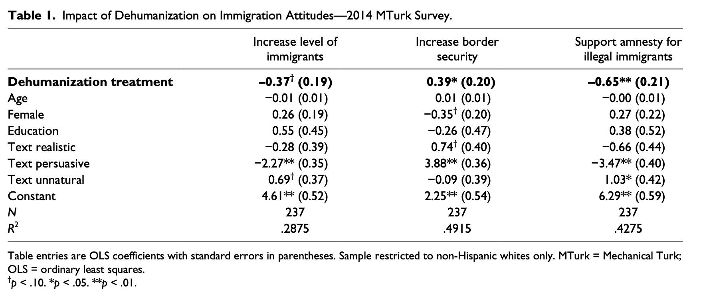
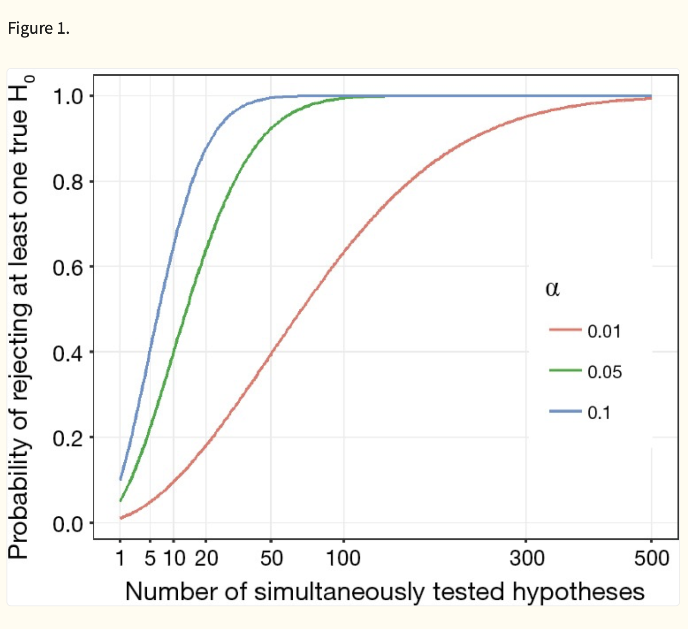
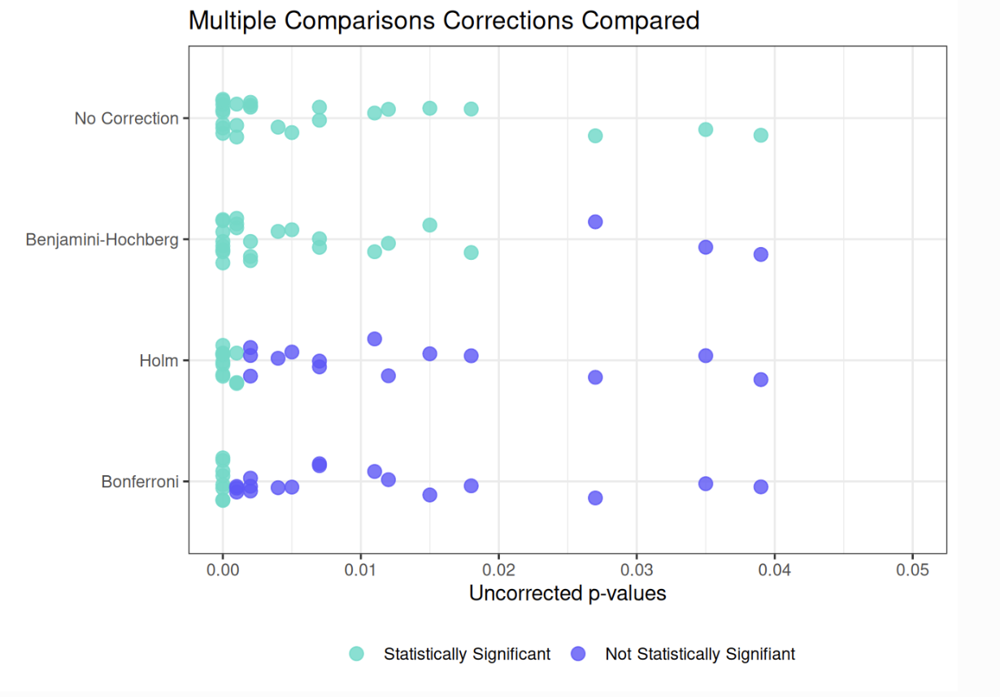
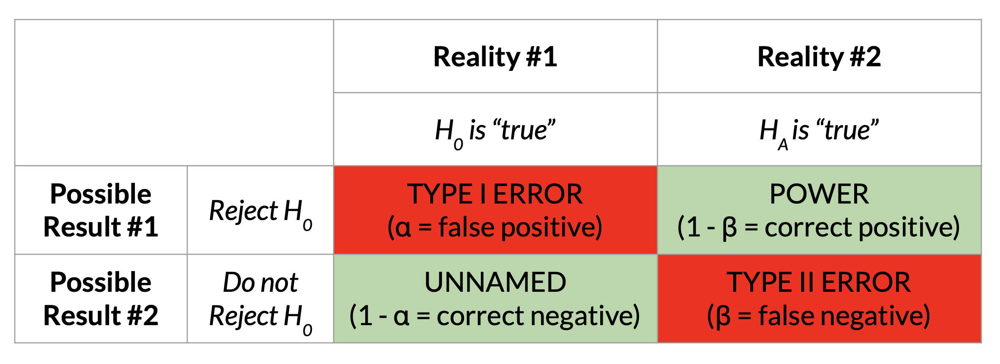
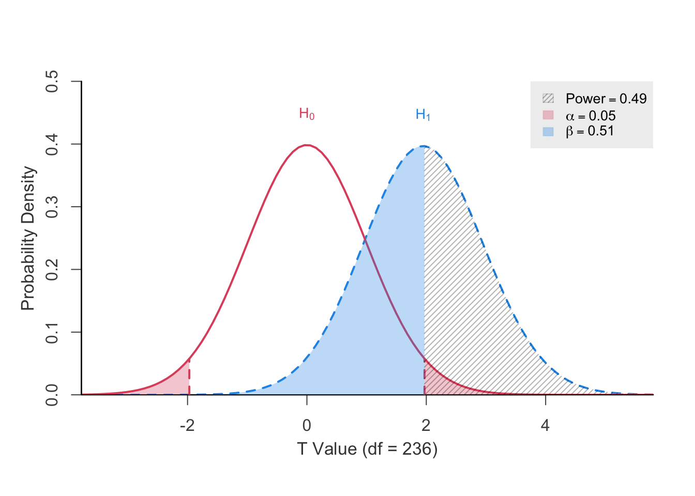
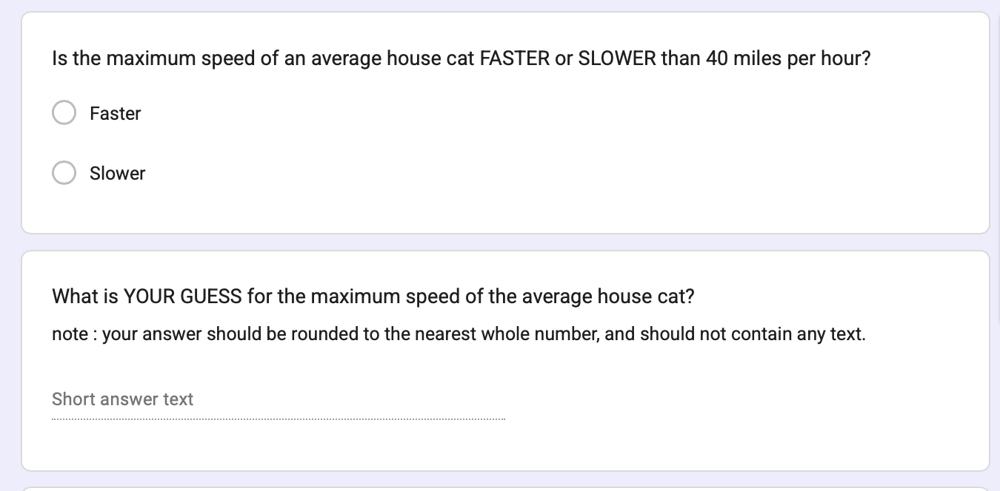
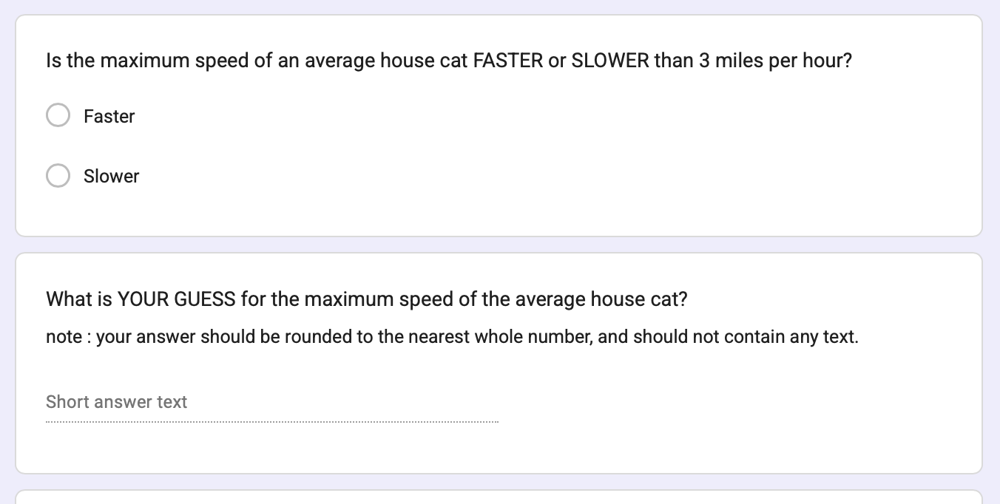
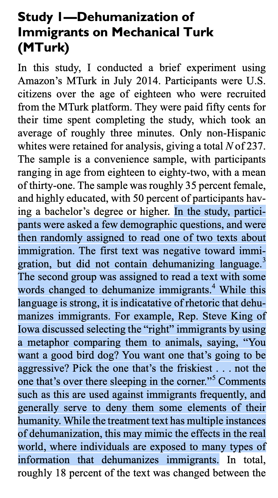
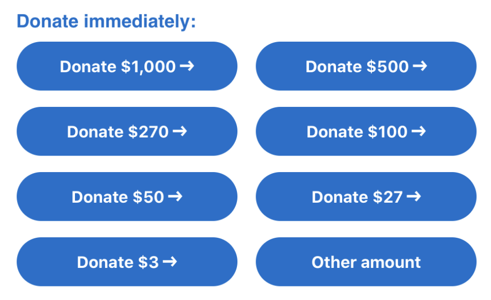

b <- .39
se <- .20
t <- b / seCheck-In : Dehumanization Data

A Case of P-Hacking
P-Hacking Demonstration. A recreation of a great interactive demonstration of how you can say anything with the “right” linear model.
Tsang, B. (2025). P hacking—five ways it could happen to you. Nature, 10. Do you think fear mongering is good if it’s in the interest of valid science?
Data Colada. Thoughts on quality control in the social science. These authors have shed light on (and taken down) some big names in the field.
Multiple Comparisons


PART 1 : Power Review
haha so what was power, professor?
Power : the probability that you would “correctly” observe the relationship between two variables if the relationship actually exists (i.e., if the null hypothesis were NOT true).

goal : you want power to be HIGH
- Play with the power visualization - click “solve for power”
- DISCUSS : what could we do as researchers to increase power???
Notespoilers
the effect size increases : the bigger the difference, the more likely you’ll detect it.
your sample size increases : the more people, the less sampling error, and the easier it is to have confidence that any difference you found is not just chance.
you increase the threshold for rejecting the null hypothesis : if the probability of rejecting the null hypothesis = 10%, then your power increases.
what’s the point, professor?
Reasons to Calculate Power :
Post-Hoc Power : You did a study, and want to further contextualize your guess about how much sampling error influenced your results.
Power Planning : You are planning to run a study, and want to know how many people to recruit to have the highest probability of observing the “true” effect (if it exists.)
- Power is a function of : effect size, sample size, and the alpha level (alpha = the Type I error that the researcher sets).
- You can use these terms to estimate the sample size needed for a given power (the convention is often 80%).
ACTIVITY : calculating in R (by hand)
- the t-distribution approaches the normal distribution (with a 95% Interval cutoff of 1.96….)
- but we are not quite there so good to look up what the t-value actually is based on our degrees of freedom (the sample size minus the number of parameters in our model)
n <- 237 # the sample size
df <- n-1 # degrees of freedom
qt(.975, df = df) # pretty close to 1.96[1] 1.970067mcut <- qt(.975, df = df) # saving this value
t - mcut [1] -0.02006685tdiff <- t - mcut
pt(tdiff, df = df) # our power.[1] 0.4920035similar to our calculation “by hand”
# install.packages("pwrss")
library(pwrss)
pwrss::power.t.test(ncp = t, df = df, plot = FALSE)+--------------------------------------------------+
| POWER CALCULATION |
+--------------------------------------------------+
Generic T-Test
---------------------------------------------------
Hypotheses
---------------------------------------------------
H0 (Null Claim) : ncp = null.ncp
H1 (Alt. Claim) : ncp != null.ncp
---------------------------------------------------
Results
---------------------------------------------------
Type 1 Error (alpha) = 0.050
Type 2 Error (beta) = 0.507
Statistical Power = 0.493 << pwrss::power.t.test(ncp = t, df = df, plot = TRUE, verbose = FALSE)
- cohen’s d = b / \(\sigma\)
- sampling error = \(\frac{\sigma}{\sqrt{n}}\)
- \(\sigma\) = \(se * \sqrt{n}\)
sdest <- (.20 * 237^.5) # formula for sd based on sampling error
pwrss::power.t.student(.39/sdest, n2 = 237, design = "one.sample")+--------------------------------------------------+
| POWER CALCULATION |
+--------------------------------------------------+
Student's T-Test (One Sample)
---------------------------------------------------
Hypotheses
---------------------------------------------------
H0 (Null Claim) : d - null.d = 0
H1 (Alt. Claim) : d - null.d != 0
---------------------------------------------------
Results
---------------------------------------------------
Sample Size = 237
Type 1 Error (alpha) = 0.050
Type 2 Error (beta) = 0.507
Statistical Power = 0.493 <<pwrss::power.t.student(.39/sdest, power = .80, design = "one.sample")+--------------------------------------------------+
| SAMPLE SIZE CALCULATION |
+--------------------------------------------------+
Student's T-Test (One Sample)
---------------------------------------------------
Hypotheses
---------------------------------------------------
H0 (Null Claim) : d - null.d = 0
H1 (Alt. Claim) : d - null.d != 0
---------------------------------------------------
Results
---------------------------------------------------
Sample Size = 492 <<
Type 1 Error (alpha) = 0.050
Type 2 Error (beta) = 0.199
Statistical Power = 0.801ACTIVITY : Calculating (and Plan) Power for Another Lab 4
- cohen’s d = b / \(\sigma\)
- sampling error = \(\frac{\sigma}{\sqrt{n}}\)
- \(\sigma\) = \(se * \sqrt{n}\)
pwrss::power.t.student(d = ???, n2 = ???, design = "one.sample")
pwrss::power.t.student(d = ???, power = ???, design = "one.sample")PART 2 : Recapping Experiments
DEFINITION : Principles of an Experiment
outcome (DV). what the researchers want to predict or explain
manipulation (IV). change only one thing about the variable
confound variables (“noise”). other factors that might influence the outcome variable
random assignment. if people put in random groups, then all other confound variables are random error.


KEY IDEA : Watch out for Misleading Control Variables
RECAP : the manipulation (A/B Testing) : researchers create multiple groups (conditions) and change ONE THING (the IV) about a person’s experience in each group & observe the result (the DV).
KEY IDEA : the comparison group matters!
a 1.5 hour research methods class DECREASES boredom compared to…
a 1.5 hour research methods class INCREASES boredom compared to…
Science is Hard : Power Posing
What is the experimental / control condotion?
Is this a fair comparison / manipulation?


Example : Gratitude Study
Read the prompt below. Answer the following questions.
- ICE-BREAKER : What’s something that you are grateful for?
- What is the experimental / control condition?
- Is this a fair comparison / manipulation? What would be better?

Lab 4 : The Dehumanization Study

Lab 6 : The Anchoring Study
| DV = Cat Speeds | DV = Tree Heights | DV = Meat Consumption | |
|---|---|---|---|
| (Intercept) | 16.33 ** | 270.20 * | 268.64 ** |
| (5.32) | (105.53) | (78.87) | |
| conditionHIGH | 12.67 | 369.35 * | 295.70 * |
| (7.38) | (145.81) | (117.58) | |
| conditionLOW | -6.26 | 54.80 | -210.97 |
| (8.76) | (172.32) | (132.76) | |
| N | 32 | 27 | 26 |
| R2 | 0.16 | 0.23 | 0.38 |
| *** p < 0.001; ** p < 0.01; * p < 0.05. | |||
 |
Other Questions to Consider : Does the experiment have….
Will individuals in the study change their behavior if they expect something to have an effect?
How much does the experimental manipulation represent what someone might experience in real life?
How much does the manipulation actually change the variable of interest?

If experimenters know what will happen to participants, will they change their behavior in ways that affect the results?